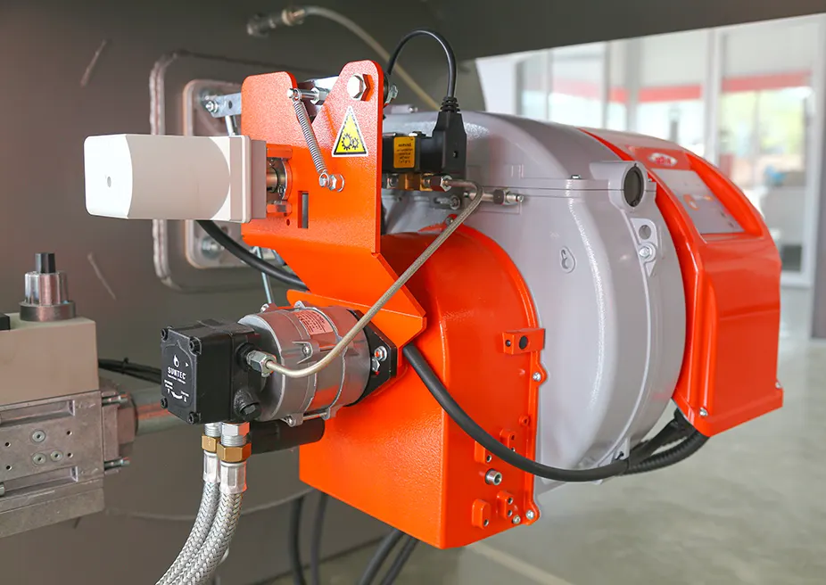

Газовые BTG, SPARKGAS, TBG
Одноступенчатые, двухступенчатые и модуляционные газовые горелки. Механический или электронный кулачок.
Итальянский производитель горелок с 1950 года. Обслуживаем газовые, дизельные, комбинированные и промышленные горелки Baltur в Ташкенте.

Компанию основали в 1950 году в Ченто (провинция Феррара) Джузеппе Баллянти и Фердинандо Тура — название сложено из их фамилий. С 1960 года компанией управляет семья Фава.
Ниже — серии, указанные в официальных материалах Baltur. Если вашей модели нет в списке, назовите её по телефону.
Одноступенчатые, двухступенчатые и модуляционные газовые горелки. Механический или электронный кулачок.
5 моделей от 165 до 5500 кВт. Запатентованная технология, NOx менее 30/50 мг/кВт·ч.
Газ / дизельное топливо, 0,1–3,6 МВт. Версии MC (механический кулачок), ME (электронная модуляция), ME-V (инвертор вентилятора).
Горелки TBG для альтернативных газов с низким уровнем NOx.
Двухблочные, 8 моделей от 200 до 24 000 кВт, модуляция до 1:10.
Двухблочные, от 500 до 80 000 кВт: газ, дизель, мазут, газ–мазут; подогретый воздух до 250 °C.
Режим работы горелки определяет, насколько точно она следует за нагрузкой котла.
Не нашли ответ — позвоните, инженер ответит по телефону.
Проверяем электроды и трансформатор розжига, давление газа, работу клапанов, подачу топлива насосом.
Как правило, загрязнён фотоэлемент или ионизационный электрод, либо нарушено соотношение газ–воздух.
Блокировку не стоит сбрасывать многократно. Нужна диагностика: причина бывает и в горелке, и в котле.
Признак неполного сгорания. Требуется чистка и режимная наладка по газоанализатору.
Загрязнение или дисбаланс крыльчатки, износ подшипников двигателя.
Назовите модель с шильдика — подскажем, что требуется горелке.
+998 98 210 03 03